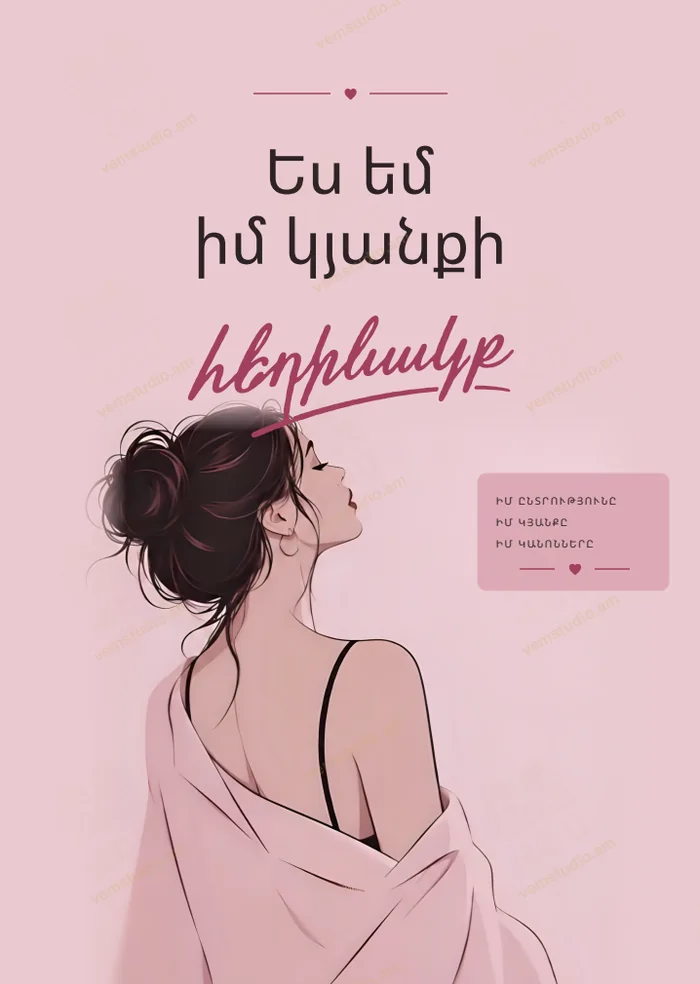
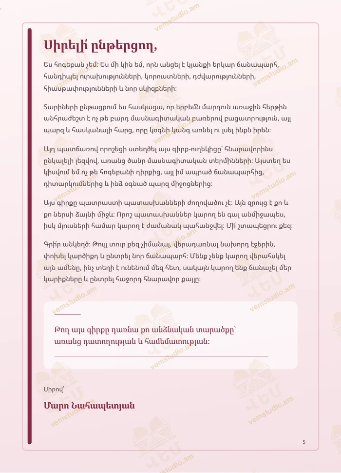
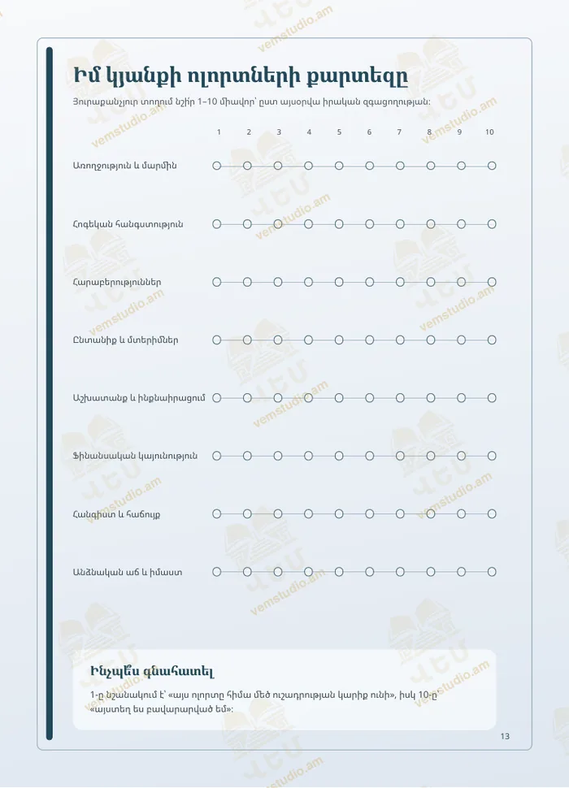
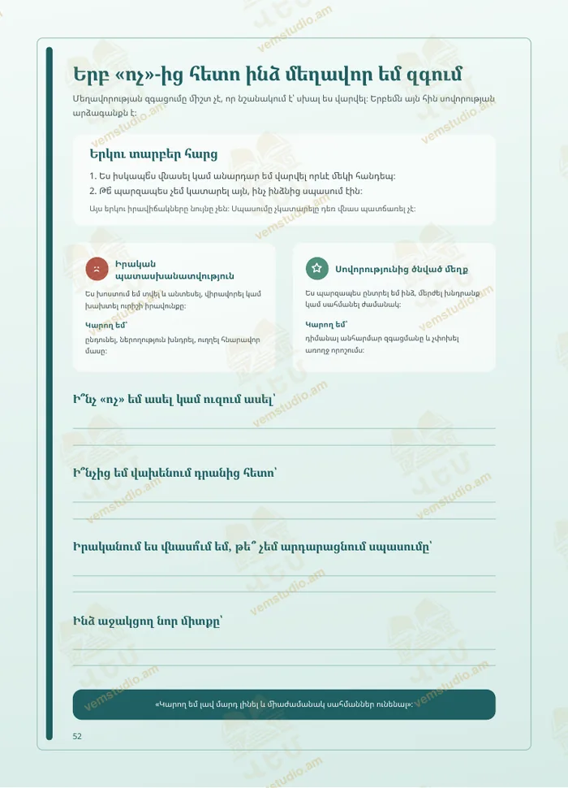

Ես եմ իմ կյանքի հեղինակըI Am the Author of My Life
Հոգեբանական գիրք-ուղեկիցA psychological companion book
«Բացիր այս գիրք-ուղեկիցը ոչ թե այն ժամանակ, երբ «պետք է», այլ այն ժամանակ, երբ պատրաստ ես լսել քեզ»։“Open this companion not when you ‘have to’, but when you are ready to listen to yourself.”
Երբեմն մեզ պետք է ոչ թե խորհուրդ, այլ պարզ հարց, որը կօգնի կանգ առնել և լսել ինքներս մեզ։ Այս գիրք-ուղեկիցը քո անձնական տարածքն է՝ ազնիվ զրույցի, մտորումների և ներքին աճի համար։ Այստեղ չկան ճիշտ կամ սխալ պատասխաններ, կա միայն քո ճանապարհը, քո ժամանակը և քո ընտրությունը։Sometimes what we need is not advice but a simple question that helps us pause and listen to ourselves. This companion book is your personal space for honest conversation, reflection and inner growth. There are no right or wrong answers here, only your path, your time and your choices.
Գրքում քեզ սպասում ենInside you will find
- հարցեր և վարժություններ՝ ինքնաճանաչման համարquestions and exercises for self-discovery
- էջեր զգացմունքների, սահմանների և ընտրությունների մասինpages on feelings, boundaries and choices
- երազանքներ, նպատակներ, Իկիգայ և հիշարժան օրերdreams, goals, ikigai and days to remember
- նամակ քո ապագայի ես-ինa letter to your future self
- ազատ էջեր՝ գրելու, նկարելու և գունավորելու համարfree pages for writing, drawing and colouring
- Ում համարFor
- Աղջիկներ (18+) և կանայքYoung women (18+) and women
- ԼեզունLanguage
- ՀայերենArmenian
- ԷջերPages
- 182
- ՏարբերակներEditions
- Տպագիր և PDFPrint and PDF
- ԳինըPrice
- PDF՝ 4000 ֏PDF: 4,000 AMD
Գիրքն արժանացել է պատվոգրի և գավաթի առցանց սիմպոզիումում։Awarded a certificate of honour and a cup at an online symposium.



